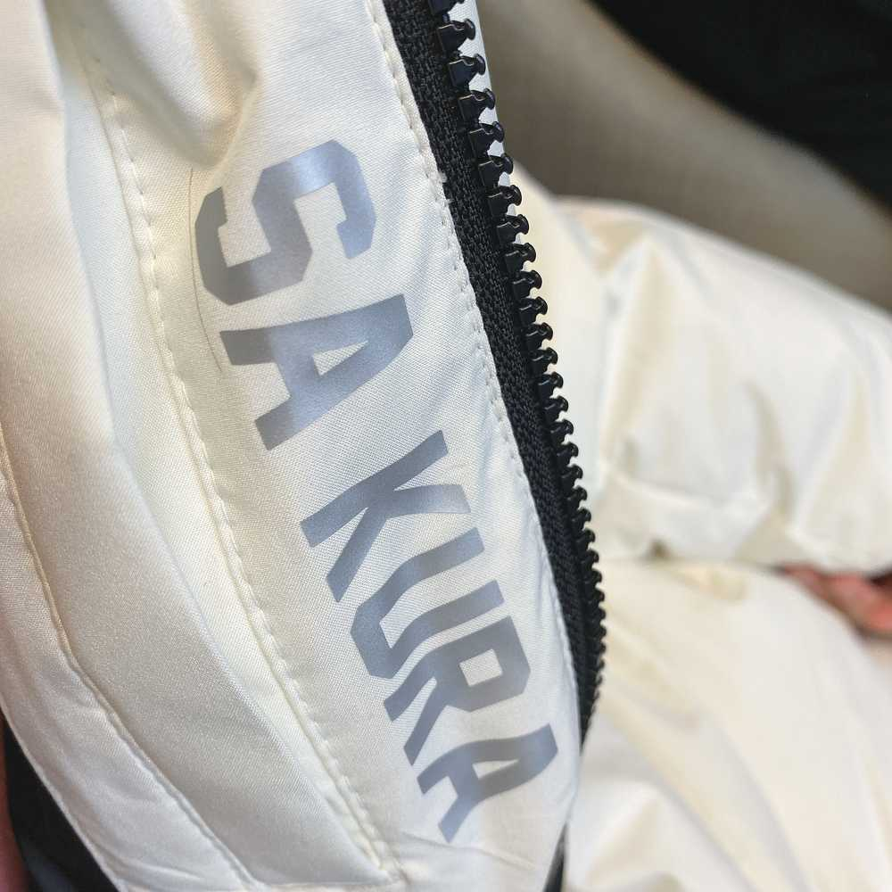
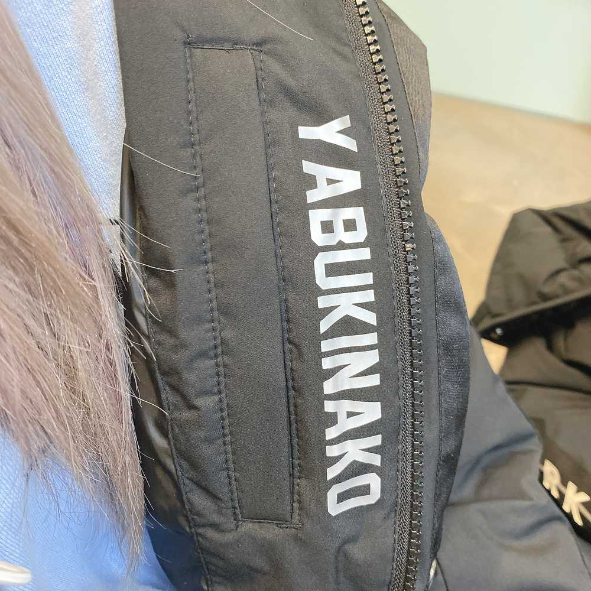

ペディンの話。
名前入りのペディン（ロングコート的な）を頂いたの〜
色は白黒ランダムで、私は白でとても可愛いの🥺
名前も入ってて、どれが誰のか分からなくなる心配もないんだけど…
例えば チェヨンなら
LEE CHAEYEON
って名字と名前の間かスペースがあるのね
でも私のペディンの名前は
SA KURA
って書いてたの！

本当に名前クラだと思われたのかなㅋㅋㅋㅋㅋㅋㅋㅋ
それなら KIM KURA が良かったㅋㅋㅋㅋ
サンキムズの一員として🥺ㅋㅋㅋ
（キムミンジュ、キムチェウォン、キムクラ）
で、隣のなこみたらなんと
Y ABUKINAKO

って意外なところでスペース入ってて
めっちゃ笑ったㅋㅋㅋㅋ
あぶきなこ!?ㅋㅋㅋㅋㅋ
思い出も含めてお気に入りのペディンです🥺
패딩 의 이야기.
이름이 있는 패딩 을 받았어요
색깔은 흑백 랜덤으로 저는 흰색에서 너무 귀엽지렁🥺
이름도 들어있어서 누가 누구것인지 모를 일이도 없는데...
예를 들면 채연이라면
LEE CHAEYEON
라는 성씨(맞아?)와 이름 사이에 공간이 있어요
근데 저의 패딩의 이름은
SA KURA
라고 했었어요!!
정말 이름 쿠라라고 생각되었던가 ㅋㅋㅋㅋㅋㅋㅋㅋ
그렇다면 KIM KURA가 또 좋았음ㅋㅋㅋㅋ
상킴즈 니까🥺ㅋㅋㅋ
(김 민주 김 채원 김꾸라)
그래서 옆에 봤는데 나코 배딩 에서는
Y ABUKINAKO
라는 의외의 곳에서 공간있어서
엄청 웃겼어 ㅋㅋㅋㅋ
아부키나코래ㅋㅋㅋㅋㅋ
추억도 담고 있는 마음에 드는 패딩이에요 🥺